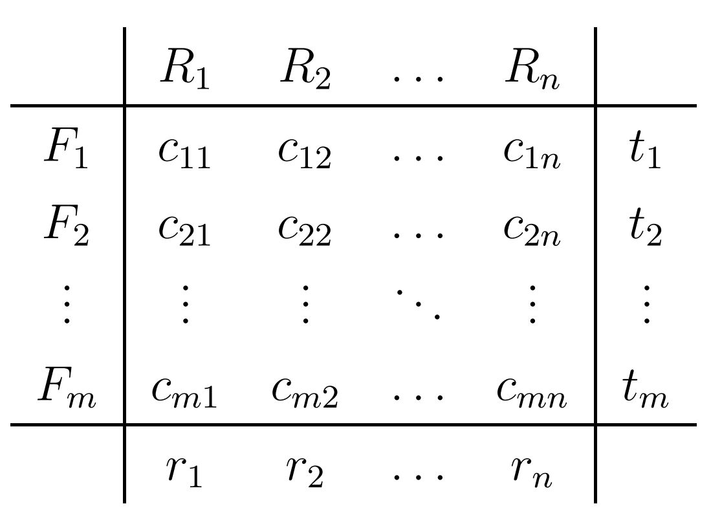

<!DOCTYPE html>

<html lang="hu"></html>

<head>
    <title>Optimalizálás</title>
    <meta charset="UTF-8">
    <link rel="stylesheet" type="text/css" href="style.css" />
</head>

<body>
    <div style="text-align: center;">
        <a href="kezdolap.html"></a>
    </div>
    
    
    <h1>Tematikák</h1>
    <div style="text-align: center;">
        <a href="grafika.html">Számítógépi grafika</a>
        &nbsp; &nbsp; &nbsp; &nbsp; &nbsp;
        <a href="adatb.html">Adatbázisrendszerek I.</a>
        &nbsp; &nbsp; &nbsp; &nbsp; &nbsp;
        <a href="optim.html">Optimalizálás</a>
    </div>

        <div class="tematika">
            <h3>Optimalizálás tárgy tematikája</h3>
            <ul>
                <li>Történeti áttekintés. Optimalizálási modellek osztályozása.</li>
                <li>Lineáris algebrai összefoglaló, pivotálás, bázistranszformáció. Konvex halmazok.</li>
                <li>A lineáris programozás alapfeladata. Grafikus megoldási módszer.</li>
                <li>A szimplex módszer.</li>
                <li>Dualitási problémakör. Érzékenységvizsgálat.</li>
                <li>Hiperbolikus programozási feladat megoldása szimplex módszerrel.</li>
                <li>Egészértékű lineáris programozás.</li>
                <li>Nevezetes integer programozási feladatok.</li>
                <li>Szállítási feladat.</li>
                <li>Hozzárendelési probléma.</li>
                <li>Bevezetés a nemlineáris optimalizálásba.</li>
                <li>NLO feladatok egyenlőségi és egyenlőtlenségi feltételekkel.</li>
                <li>Optimalizálási feladatok megoldása Excellel.</li>
            </ul>
        </div>

        
        
</body>

<footer>
    <i>Keresztes Iulia, ULA7Z2, 2023</i>
</footer>